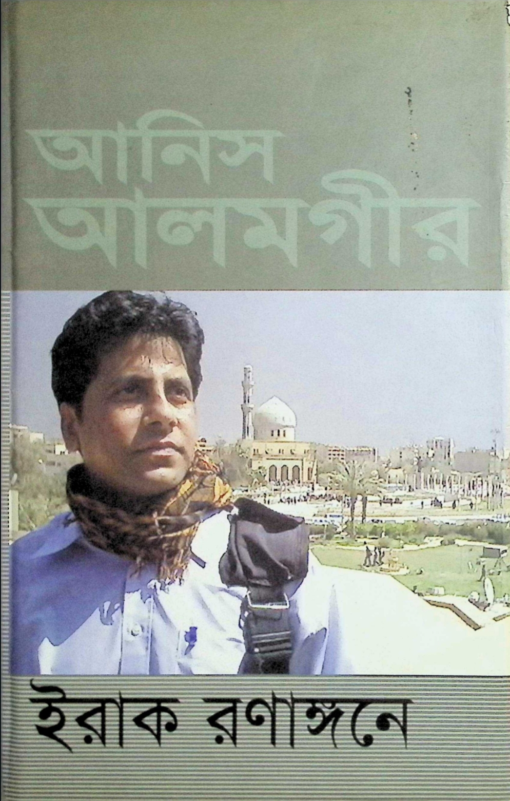

MY FAVOURITE BOOK Genuinely, I am not going to lie but I am not interested in reading books at all. It's probably my least favourite thing to do but, in 2025, all of a sudden I decided to read the book Iraq Ronangoney by Anis Alamgir (yes my favourite celebrity) and at the start this book seemed interesting and then I kept on reading it and what can I say? It's a masterpiece! The book's name translates to "Iraq on the battlefield" and its all about Anis Alamgir's experience in Iraq while covering the Iraq War in 2003. This book and later a few other war related memoirs actually showed me where my real interest is in books. Since reading those, I have gained interests towards war related memoirs and read memoirs like A Long Way Gone by Ishmael Beah and I am Malala by Malala Yousafzai but, none of those can't become more favourite to me than Iraq Ronangoney. I genuinely don't have an answer for why I like this book so much but personally to me, the Iraq War history is much more interesting for some reason and I like the tone that Anis Alamgir used in his book. It could also be because this book is written in Bengali and Bengali is my first language. |